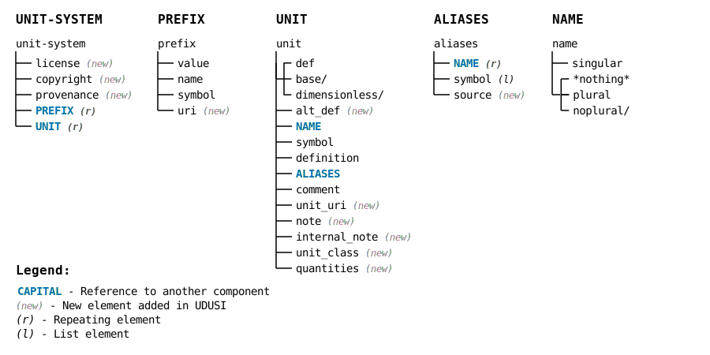

This page outline technical aspects of the XML files and their content. Last updated: 2025-03-19.
Note that the information below has been gathered through practical experimentation with the UDUNITS2 XML files. It is not intended as a formal specification of the logical content of UDUNITS2 files.
Units must be included in a well-defined order because their definitions are successively built upon previously defined units. This means that the SI Base Units must be defined first, followed by the SI Special Named Units, and so on. As a result, the SI Constants, which have SI Special Named Units, can only appear in the hierarchy after these have been defined despite the fact that they are used to define the SI Base Units.
When a new unit or unit alias is defined in the XML files, it connects to previously defined units via the <def>....</def> element. SI base units are by definition not related to other units, which in the XML files is handled by replacing the <def>....</def> element with the element <base/>.
UDUNITS2 does not allow multiple “standard” units (as opposed to alias units) sharing the same basic definition. For example, the two SI Special Named Units hertz and becquerel share the same basic definition 1/s. To resolve this, becquerel is designated as an alias to hertz in the XML file, despite the fact that they refer to totally different concepts and physical quantities. From a user perspective, this has little impact, except that UDUNITS2 allows conversion between the two units.
There are two options for downloading XML files for use with the UDUNITS2 software package:
Option 1 combines all information into one XML file, which would likely be preferable in many use cases.
Option 2 keeps the information from different sources as separate XML files, which enables tracing the source of information.
These files are then referenced via XML <include> statements in the XML file used by UDUNITS2
(similar to how it is handled in the original UDUNITS2 files). In this context, the different sources are SI and UDUNITS2 (see the table below).
UDUSI provides some minor additions and adjustments which are kept in separate files, as indicated in the file names, or in the unit_class element
ofthe XML file, and shown in the web pag listings. Here is a list of the files:
| File name | Description |
|---|---|
| udusi.xml | File to use with UDUNITS2 (includes the files below) |
| udusi-SIPrefix.xml | SI prefixes |
| udusi-UDUprefix.xml | Additional prefix information from UDUNITS2 |
| udusi-SIBaseUnit.xml | SI Base Units |
| udusi-UDUSIAddedConstant.xml | UDUSI definition of constant π (pi) |
| udusi-SISpecialNamedUnit.xml | SI Special Named Units |
| udusi-SIConstant.xml | SI Defining Constants |
| udusi-nonSIUnit.xml | Non-SI Units accepted for use with SI units |
| udusi-MeasurementUnit.xml | SI “helper definition” of the non-SI unit gram |
| udusi-UDUbase.xml | (*) UDUNITS2 additional information to SI Base Units derived from the file udunits2-base.xml |
| udusi-UDUderived.xml | (*) UDUNITS2 additional information to SI Special Named Units derived from the file udunits2-derived.xml |
| udusi-UDUaccepted.xml | (*) UDUNITS2 information from the file udunits2-accepted.xml |
| udusi-UDUcommon.xml | All other units defined by UDUNITS2 derived from the file udunits2-common.xml |
(*) Information that overlaps or is superseded by SI has been removed.

The order of subelements within each <prefix>....</prefix> or <unit>....</unit> is important.
The UDUSI XML files contain various elements:
| XML element | Description | UDUNITS2 | UDUSI |
|---|---|---|---|
| HEADER | |||
<unit-system> |
Main container | required | required |
<copyright> |
ignored | required | |
<license> |
ignored | required | |
<provenance> |
ignored | required | |
| PREFIXES | |||
<prefix> |
Prefix container | required | required |
<value> |
Prefix numeric value | required | required |
<name> |
Prefix name | required | required |
<symbol> |
Prefix symbol | required | required |
<uri> |
URI to SI Digital Framework | ignored | optional |
| UNITS | |||
<unit> |
Unit container | required | required |
<base/><dimensionless/><def> |
Unit definition (one of these) |
required | required |
<alt_def> |
SI units definition | ignored | optional |
<name> |
Unit name container | optional | optional |
<singular> |
Singular name for unit | optional | optional |
<plural><noplural/> |
Plural name for unit, or expressly no plural name |
optional | optional |
<symbol> |
Unit symbol | optional | optional |
<definition> |
Text describing the unit definition | optional | optional |
<aliases> |
Aliases container | optional | optional |
<name> |
Container for unit name alias | optional | optional |
<singular> |
Alias singular name | optional | optional |
<plural><noplural/> |
Alias plural name, or expressly no plural alias name |
optional | optional |
<symbol> |
Unit alias symbols | optional | optional |
<source> |
Which UDUNITS2 source file for alias | ignored | optional |
<comment> |
Textual comment (usually from UDUNITS2 XML file) | ignored | optional |
<unit_uri> |
URI to SI Digital Framework | ignored | optional |
<note> |
Textual comment | ignored | optional |
internal_note |
Textual comment (for XML only) | ignored | ignored |
<unit_class> |
Unit category | ignored | required |
<quantities> |
Typical physical quantity | ignored | optional |
For most units the XML files do not specify a plural variant of the name or symbol. In these cases the following standard rules are applied by the UDUNITS2 software:
Basic Rules: